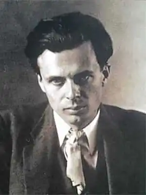
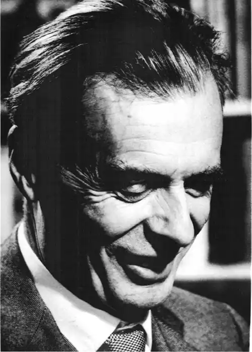

ХАКСЛІ, Олдос Леонард (Huxley, Aldous Leonard — 1894, Годалмінґ, Саррей — 22.11.1963, Лос-Анджелес) — англійський письменник.Онук видатного англійського біолога Генрі Хакслі (Гекслі). Син Леонарда Гекслі, редактора журналу; молодший брат Джуліана Гекслі — відомого біолога і письменника. Освіту здобув у Оксфорді, в Беліол-коледжі. Після закінчення навчання у 1915 р. Хакслі займався журналістикою: писав критичні статті про драматургію для "Вестмінстерської газети", співпрацював із тижневиком "Атенеум" ("The Athenaem"), зоряним часом якого стали 1919—1921 pp., коли редактором був Д. М. Мюррей, а на сторінках журналу друкувалися твори Б. Рассела, Т. С. Еліота, К. Менсфілд та ін.
Хакслі дебютував збіркою віршів "Вогненне колесо". До 1920 p. побачили світ ще кілька поетичних збірок. Проте літературне визнання Хакслі здобув завдяки своїй прозі. В одному з томів "У пошуках утраченого часу" М. Пруст згадує серед відвідувачів паризького салону внука старого Гекслі, який здобув панівне становище в англійській літературі (une position preponderante).
У 1920 p. побачила світ збірка новел, а через рік вийшов з друку роман "Жовтий Кром" ("Crome Yellow"), у якому Хакслі заявив про себе як про письменника, котрий має витончене почуття гумору, але водночас здатний гостросатирично прокоментувати події сучасності. "Жовтий Кром" став першим твором циклу, до якого увійшли також роман "Хоровод блазнів" ("Antic Hay", 1923), написаний під час перебування в Італії, та романи "Це безплідне листя" ("Those Barren Leaves", 1927) та "Контрапункт"("Point Counter Point", 1928), де в образах, створених Хакслі, легко вгадувалися характери близьких друзів автора — Дж. Лоуренса та Д. М. Мюррея. У розробці жанру інтелектуального роману Хакслі називають послідовником А. Франса, котрий здійснив перехід від старого типу "філософського роману" з умовно-історичними або пародій-но-авантюрними декораціями до "роману ідей" у комедійно-натуралістичному ландшафті. У ранніх романах Хакслі виявилося чимало характерних рис його подальшої творчості, зокрема контрапунктна архітектоніка, коли у творі паралельно розвиваються кілька самостійних тем і ліній. Композиція романів Хакслі нагадує архітектоніку тих музичних творів, описові яких він віддає не одну сторінку: "Кожна частина живе своїм особливим життям; вони доторкаються, їхні шляхи перетинаються, на якусь мить вони єднаються у гармонії; вона видається остаточною і досконалою, але невдовзі знову розпадається. Кожна частина осібна, окрема, одна. "Я є я, — каже скрипка, — світ обертається навколо мене". — "Навколо мене", — співає віолончель. "Навколо мене", — запевняє флейта. І всі вони однаковою мірою мають рацію і помиляються, і ніхто з них не слухає іншого. З двох мільярдів частин складається людська фуга. Цей гомін, можливо, має якийсь сенс для статистика, але нічого не вартий для митця. Лише щоразу вибираючи одну або дві частини, митець може щось зрозуміти" ("Контрапункт"). На колоподібну композицію вказує і назва роману "Хоровод блазнів". У цьому творі по колу розвиваються стосунки між Гамбрілом і Майрою: колись зневажений і скривджений Майрою Гамбріл стає її коханцем, вже повністю збайдужівши до неї; по колу належить усім своїм залицяльникам Майра, яка шукає і не може знайти того, хто б замінив їй першого коханого — блакитноокого Тоні, котрий загинув на фронті (так у роман Хакслі, який уникнув мобілізації до війська через короткозорість, увійшла тема руйнівної війни, що втручається у мирне життя); по колу Гамбріл і Майра відвідують усіх своїх приятелів, роз'їжджаючи на таксі вулицями нічного Лондона; по колу розшукує Гамбріла Розі Шируотер, перебуваючи у замкненому колі відомих їй адрес. Окремі з цих кіл залишаються розімкненими, але колоподібність руху визначається тією обставиною, що будь-який активний герой роману оточує себе іншими дійовими особами, рівновіддаленими від нього і від інших персонажів. І всі ці кола не збігаються. Усі вони перебувають у різних площинах, забарвлені різними емоціями, наповнені різними роздумами. Іноді вони перетинаються, і тоді відбуваються дивні трансфери. У ту мить, коли Гамбріл розважається з Розі, дружиною Шируотера, сам Шируотер втішається товариством Майри Вівіш. Поліфонізм романів Хакслі постає не лише на ґрунті паралельного розвитку ліній життя молодих аристократів, у його творах лунають і голоси безробітних, що блукають у пошуках праці. Безногі солдати, вуличні продавці у подертих черевиках, старі баби з сірниками, убивці, яких страчують на шибениці о 8 годині ранку, сухотна поденниця вриваються у життя молодих аристократів, нагадуючи "вуличні вигуки" — пісенний жанр, поширений у XVT ст., в епоху, до культури якої Хакслі так часто звертався. Але у цьому гаморі немає гармонії. Це суцільна какофонія. Вона не надається для естетизації. У творчості Хакслі можна зауважити кілька наскрізних тем. Це роздуми про Бога та справжню людяність, пошуки ідеалу. Вони невіддільні від роздумів Хакслі та його героїв про музику, живопис, архітектуру, про проблеми біології, а відтак і про старіння, про смерть, про те, кого, як і чого слід навчати, про свободу. Ці роздуми невіддільні також від учування персонажів Хакслі у проблему часу, від їхнього бажання чи небажання робити паузи, влаштовувати антракти. Героїв Хакслі хвилюють найглибші філософські проблеми. Яким би не був їхній фах, вони, як правило, намагаються осмислити сутнісні підвалини світотвору, зрозуміти, як влаштований світ. Виявом будови світотвору є для них усе, що їх оточує. Художник Ліпіат ("Хоровод блазнів") каже: "Що таке наука і мистецтво, що таке релігія і філософія, як не спосіб виразити у приступних для людини образах і поняттях якусь надлюдську реальність". Часом герої Хакслі зневірюються у слові, у його здатності адекватно відтворювати дійсність і шукають інших способів самовираження. Нерідко їм у цьому допомагає музика. Музика з'являється тоді, коли виникає спроба героїв зрозуміти одне одного. А коли невдовзі має спалахнути кохання, все стихає, над усім панує тиша. Видатним універсалізмом у відображенні дійсності, на думку Хакслі, вирізнявся В. Шекспір, котрий умів відчувати і передавати майже невловні і незбагненні прояви тих аспектів Універсуму, які, здавалося би, перебувають поза сферою людських відчуттів. Твори Хакслі насичені цитатами із Шекспіра: відьомське вариво у змалюванні лабораторії сера Едварда з роману "Контрапункт"; "Що він Гекубі?" — у темі негритянського фокстроту; "Чудовисько із зеленими очима" — у відповіді Гамбріла на зауваження про брак смаку після того, як він похвалив одну з жінок; цитування 52-го сонета на підтвердження думки про те, що свята повинні бути рідкісними ("Хоровод блазнів"). Назва роману "Чудовий новий світ" ("Brave New World", 1932) також запозичена у Шекспіра. Один із героїв цього роману, Джон, виховувався на єдиній книзі, що збереглася після глобальної катастрофи, — цією книгою був томик Шекспіра. Світ шекспірівських образів протистоїть світові антиутопії, відтвореному Хакслі у цьому романі. А Джон став єдиним героєм, який у доленосній для нього ситуації вирішив, що краще піти з життя, ніж відмовитися від своєї людської сутності і стати людиною "реконструйованою". Онук видатного біолога, Хакслі часто показує своїх героїв в інтер'єрі біологічних лабораторій, серед морських свинок, пацюків та кролів. Його герої також іноді нагадують письменникові тварин: Хакслі зауважує у них котячу посмішку, поведінку шимпанзе, руки, схожі на лапки ящірки, ніс, що нагадує дзьоб хижого птаха. Персонажам Хакслі подобається стежити за життям тварин. Архітектор Теодор Гамбріл-старший полюбляє спостерігати за зграєю шпаків, а відтак доволі часто застуджується. Але це дозволяє йому відчути ефект біополя. Він уміє за секунду передбачити, коли зграя прокинеться або злетить у повітря. Крім того, герої X. цікавляться біологічними експериментами. І якщо у ранніх романах ці експерименти є захопливими і безпечними (можна, приміром, прищепити троянди на кущ смородини, щоби розквітнули чорні троянди), а на небезпеку іноді наражаються лише біологи (Шируотер ладен кілька годин поспіль крутити педалі стаціонарного велосипеда, щоби перевірити, чи впливає тривале пітніння на склад крові), то у романах 30—40-х pp. Хакслі змальовує зловісні експериментальні ситуації, у яких предметом дослідження виступає людська сутність. Герої-інтелектуали ранніх романів спогорда говорили про те, що є люди, яким свобода не дасть нічого, крім сум'яття, що є люди, яких не варто нічого навчати, крім уміння підкорятися. Такі міркування втілилися в образну систему повністю завершеного, цілісного "чудового нового світу", у якому люди поділяються на осібні категорії — "касти", а перехід з однієї групи до іншої неможливий. У цьому світі існує вельми своєрідне уявлення про щастя: суспільство спроможне виконати будь-яке бажання індивіда. Але ця позірна "ідилія" ґрунтується на втручанні в генетику людини. З неї роблять слухняну істоту, яка, врешті, й справді почуватиметься комфортно, бо не буде прагнути до недосяжного, тобто втратить ті риси, які з часів Відродження вважалися визначальними для людського духу. Цю тематику Хакслі розвиватиме у романах "Сліпий у Ґазі" ("Eyeless in Gaza", 1936), "Після багатьох весен" ("After Many Springs", 1939), "Час повинен зупинитися" ("Time Must Have a Stop", 1944), "Вічна філософія" ("The Perennial Philosophy", 1946). Страшним переосмисленням фрази одного з героїв "Контрапункту", Філіпа Куорлза, стане роман "Мавпа та сутність". Куорлз — глибокий мислитель, котрий має невтомний гострий розум, але водночас усвідомлює свою неповноцінність, бо нездатний тонко відчувати. Побачивши одного разу, як під колесами авто загинув пес, Куорлз викладає цілу теорію: "Сам винен, бо не пильнувався. Ось чим закінчується погоня за самицею... Мораль набула б вельми химерних форм, якби ми кохалися лише певної пори, а не протягом цілого року. Поняття про моральність і аморальність змінювались би щомісяця". У романі "Мавпа та сутність", написаному після атомного бомбардування Хіросіми, моделюється світ, у якому живуть люди, уражені радіацією і схильні до сезонного кохання.